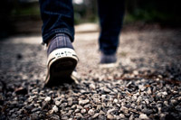

Harrastukset
Biljardi
Harrastukseni koostuvat monipuolisista aktiviteeteista, joista nautin vapaa-ajallani. Yksi suosikkiharrastuksistani on biljardi. Rakastan pelata biljardia ystävieni kanssa, ja se tarjoaa minulle mahdollisuuden kehittää taitojani, kilpailla ja rentoutua samanaikaisesti.
Pyöräily
Toinen intohimoni on pyöräily. Rakastan liikkua pyörällä luonnossa ja kaupunkiympäristössä. Pyöräily tarjoaa minulle terveellisen tavan pitää kuntoa yllä samalla kun pääsen nauttimaan maisemista ja ulkoilmasta.
Kävely
Kolmantena harrastuksena, mutta yhtä tärkeänä, on kävely. Kävelen usein pitkiä matkoja luonnossa tai kaupungissa, mikä auttaa minua rentoutumaan, pohtimaan asioita ja nauttimaan rauhallisista hetkistä.
Nämä harrastukset antavat minulle mahdollisuuden tasapainottaa elämääni liikunnan ja sosiaalisen vuorovaikutuksen kautta sekä tarjoavat rentouttavia hetkiä ja mahdollisuuden nauttia ympäröivästä maailmasta eri tavoin.